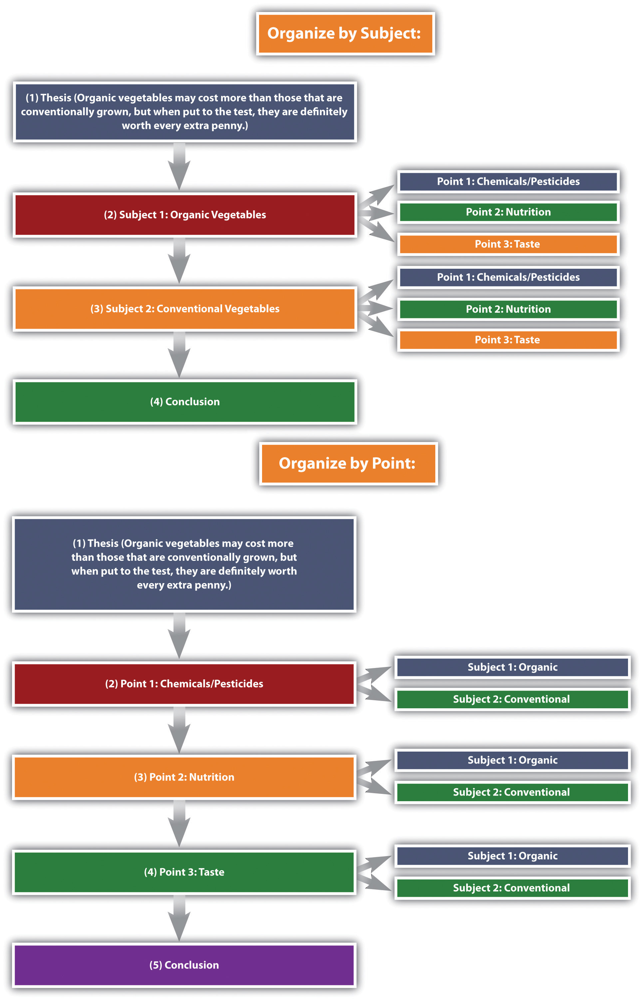

ComparisonIn writing, to discuss things that are similar in nature. in writing discusses elements that are similar, while contrastIn writing, to discuss things that are different. in writing discusses elements that are different. A compare-and-contrast essayAn essay that analyzes two subjects by either comparing them, contrasting them, or both., then, analyzes two subjects by comparing them, contrasting them, or both.
The key to a good compare-and-contrast essay is to choose two or more subjects that connect in a meaningful way. The purpose of conducting the comparison or contrast is not to state the obvious but rather to illuminate subtle differences or unexpected similarities. For example, if you wanted to focus on contrasting two subjects you would not pick apples and oranges; rather, you might choose to compare and contrast two types of oranges or two types of apples to highlight subtle differences. For example, Red Delicious apples are sweet, while Granny Smiths are tart and acidic. Drawing distinctions between elements in a similar category will increase the audience’s understanding of that category, which is the purpose of the compare-and-contrast essay.
Similarly, to focus on comparison, choose two subjects that seem at first to be unrelated. For a comparison essay, you likely would not choose two apples or two oranges because they share so many of the same properties already. Rather, you might try to compare how apples and oranges are quite similar. The more divergent the two subjects initially seem, the more interesting a comparison essay will be.
Comparing and contrasting is also an evaluative tool. In order to make accurate evaluations about a given topic, you must first know the critical points of similarity and difference. Comparing and contrasting is a primary tool for many workplace assessments. You have likely compared and contrasted yourself to other colleagues. Employee advancements, pay raises, hiring, and firing are typically conducted using comparison and contrast. Comparison and contrast could be used to evaluate companies, departments, or individuals.
Brainstorm an essay that leans toward contrast. Choose one of the following three categories. Pick two examples from each. Then come up with one similarity and three differences between the examples.
Brainstorm an essay that leans toward comparison. Choose one of the following three items. Then come up with one difference and three similarities.
The compare-and-contrast essay starts with a thesis that clearly states the two subjects that are to be compared, contrasted, or both and the reason for doing so. The thesis could lean more toward comparing, contrasting, or both. Remember, the point of comparing and contrasting is to provide useful knowledge to the reader. Take the following thesis as an example that leans more toward contrasting.
Thesis statement: Organic vegetables may cost more than those that are conventionally grown, but when put to the test, they are definitely worth every extra penny.
Here the thesis sets up the two subjects to be compared and contrasted (organic versus conventional vegetables), and it makes a claim about the results that might prove useful to the reader.
You may organize compare-and-contrast essays in one of the following two ways:
See Figure 10.1 "Comparison and Contrast Diagram", which diagrams the ways to organize our organic versus conventional vegetables thesis.
Figure 10.1 Comparison and Contrast Diagram
The organizational structure you choose depends on the nature of the topic, your purpose, and your audience.
Given that compare-and-contrast essays analyze the relationship between two subjects, it is helpful to have some phrases on hand that will cue the reader to such analysis. See Table 10.3 "Phrases of Comparison and Contrast" for examples.
Table 10.3 Phrases of Comparison and Contrast
| Comparison | Contrast |
|---|---|
| one similarity | one difference |
| another similarity | another difference |
| both | conversely |
| like | in contrast |
| likewise | unlike |
| similarly | while |
| in a similar fashion | whereas |
Create an outline for each of the items you chose in Note 10.72 "Exercise 1" and Note 10.73 "Exercise 2". Use the point-by-point organizing strategy for one of them, and use the subject organizing strategy for the other.
First choose whether you want to compare seemingly disparate subjects, contrast seemingly similar subjects, or compare and contrast subjects. Once you have decided on a topic, introduce it with an engaging opening paragraph. Your thesis should come at the end of the introduction, and it should establish the subjects you will compare, contrast, or both as well as state what can be learned from doing so.
The body of the essay can be organized in one of two ways: by subject or by individual points. The organizing strategy that you choose will depend on, as always, your audience and your purpose. You may also consider your particular approach to the subjects as well as the nature of the subjects themselves; some subjects might better lend themselves to one structure or the other. Make sure to use comparison and contrast phrases to cue the reader to the ways in which you are analyzing the relationship between the subjects.
After you finish analyzing the subjects, write a conclusion that summarizes the main points of the essay and reinforces your thesis. See Chapter 15 "Readings: Examples of Essays" to read a sample compare-and-contrast essay.
Many business presentations are conducted using comparison and contrast. The organizing strategies—by subject or individual points—could also be used for organizing a presentation. Keep this in mind as a way of organizing your content the next time you or a colleague have to present something at work.
Choose one of the outlines you created in Note 10.75 "Exercise 3", and write a full compare-and-contrast essay. Be sure to include an engaging introduction, a clear thesis, well-defined and detailed paragraphs, and a fitting conclusion that ties everything together.
There are two main organizing strategies for compare-and-contrast essays.